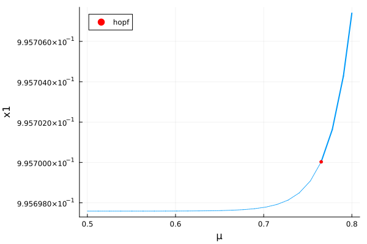
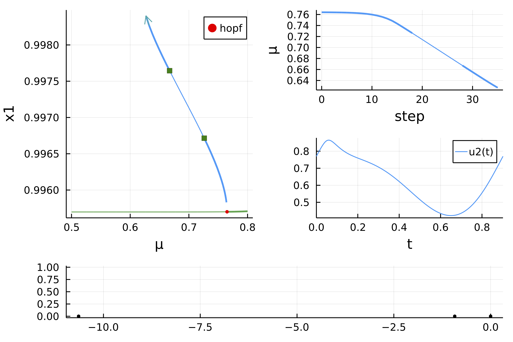

🟡 Colpitts–type oscillator
In this tutorial, we show how to study parametrized DAEs like:
\[A(\mu,x)\dot x = G(\mu,x).\]
In particular, we detect a Hopf bifurcation and compute the periodic orbit branching from it using a multiple standard shooting method.
The following DAE model is taken from [Rabier]:
\[\left(\begin{array}{cccc} -\left(C_{1}+C_{2}\right) & C_{2} & 0 & 0 \\ C_{2} & -C_{2} & 0 & 0 \\ C_{1} & 0 & 0 & 0 \\ 0 & 0 & L & 0 \end{array}\right)\left(\begin{array}{c} \dot{x}_{1} \\ \dot{x}_{2} \\ \dot{x}_{3} \\ \dot{x}_{4} \end{array}\right)=\left(\begin{array}{c} R^{-1}\left(x_{1}-V\right)+I E\left(x_{1}, x_{2}\right) \\ x_{3}+I C\left(x_{1}, x_{2}\right) \\ -x_{3}-x_{4} \\ -\mu+x_{2} \end{array}\right)\]
It is easy to encode the DAE as follows. The mass matrix is defined next.
using Revise, Plotsimport LinearAlgebra as LAimport BifurcationKit as BKimport BifurcationKit: @optic, @set, @reset# function to record information from the solutionrecordFromSolution(x, p; k...) = (u1 = BK.norminf(x), x1 = x[1], x2 = x[2], x3 = x[3], x4 = x[4])# vector fieldf(x, p) = p.Is * (exp(p.q * x) - 1)IE(x1, x2, p) = -f(x2, p) + f(x1, p) / p.αFIC(x1, x2, p) = f(x2, p)/ p.αR - f(x1, p)function Colpitts!(dz, z, p, t = 0) (;C1, C2, L, R, Is, q, αF, αR, V, μ) = p x1, x2, x3, x4 = z dz[1] = (x1 - V) / R + IE(x1, x2, p) dz[2] = x3 + IC(x1, x2, p) dz[3] = -x3-x4 dz[4] = -μ+x2 dzend# parameter valuespar_Colpitts = (C1 = 1.0, C2 = 1.0, L = 1.0, R = 1/4., Is = 1e-16, q = 40., αF = 0.99, αR = 0.5, μ = 0.5, V = 6.)# initial conditionz0 = [0.9957,0.7650,19.81,-19.81]# mass matrixBe = [-(par_Colpitts.C1+par_Colpitts.C2) par_Colpitts.C2 0 0;par_Colpitts.C2 -par_Colpitts.C2 0 0;par_Colpitts.C1 0 0 0; 0 0 par_Colpitts.L 0]# we group the differentials togetherprob = BK.DAEBifProblem(Colpitts!, z0, par_Colpitts, (@optic _.μ); record_from_solution = recordFromSolution)We first compute the branch of equilibria. But we need a generalized eigenvalue solver for this.
eigsolver = BK.EigenMassMatrix(Be, BK.DefaultEig())# continuation optionsoptn = BK.NewtonPar(;tol = 1e-13, max_iterations = 10, eigsolver)opts_br = BK.ContinuationPar(p_min = -0.4, p_max = 0.8, ds = 0.01, dsmax = 0.01, nev = 4, plot_every_step = 3, max_steps = 1000, newton_options = optn)opts_br = @set opts_br.newton_options.verbose = falsebr = BK.continuation(prob, BK.PALC(), opts_br; normC = BK.norminf)scene = plot(br, vars = (:param, :x1))
Periodic orbits with Multiple Standard Shooting
We use shooting to compute periodic orbits: we rely on a fixed point of the flow. To compute the flow, we use DifferentialEquations.jl.
Thanks to [Lamour], we can just compute the Floquet coefficients to get the nonlinear stability of the periodic orbit. Two period doubling bifurcations are detected.
Note that we use Automatic Branch Switching from a Hopf bifurcation despite the fact the normal form implemented in BifurcationKit.jl is not valid for DAE. For example, it predicts a subcritical Hopf point whereas we see below that it is supercritical. Nevertheless, it provides a
import OrdinaryDiffEq as ODE# this is the ODEProblem used with `DiffEqBase.solve`# we set the initial conditionsprob_dae = ODE.ODEFunction(Colpitts!; mass_matrix = Be)probFreez_ode = ODE.ODEProblem(prob_dae, z0, (0, 1), par_Colpitts)# we lower the tolerance of newton for the periodic orbitsoptnpo = @set optn.tol = 1e-9@reset optnpo.eigsolver = BK.DefaultEig()opts_po_cont = BK.ContinuationPar(dsmin = 0.0001, dsmax = 0.005, ds= -0.0001, p_min = 0.2, max_steps = 50, newton_options = optnpo, nev = 4, tol_stability = 1e-3, plot_every_step = 5)# Shooting functional. Note the stringent tolerances used to cope with# the extreme parameters of the modelprobSH = BK.Shooting(10, probFreez_ode, ODE.Rodas5P(); reltol = 1e-10, abstol = 1e-13)# automatic branching from the Hopf pointbr_po = BK.continuation(br, 1, opts_po_cont, probSH; plot = true, verbosity = 3, # δp is use to parametrize the first parameter point on the # branch of periodic orbits δp = 0.001, record_from_solution = (u, p; k...) -> begin outt = BK.get_periodic_orbit(p.prob, u, p.p) m = maximum(outt[1,:]) return (s = m, period = u[end]) end, # plotting of a solution plot_solution = (x, p; k...) -> begin outt = BK.get_periodic_orbit(p.prob, x, p.p) plot!(outt.t, outt[2, :], subplot = 3) plot!(br, vars = (:param, :x1), subplot = 1) end, # the newton callback is used to reject residual > 1 # this is to avoid numerical instabilities from DE.jl callback_newton = BK.cbMaxNorm(1.0), normC = BK.norminf) ┌─ Curve type: PeriodicOrbitCont from Hopf bifurcation point.
├─ Number of points: 39
├─ Type of vectors: Vector{Float64}
├─ Parameter μ starts at 0.7642229295455084, ends at 0.6353256494070976
├─ Algo: PALC [Secant]
└─ Special points:
- # 1, pd at μ ≈ +0.73115092 ∈ (+0.73115092, +0.73117344), |δp|=2e-05, [converged], δ = ( 1, 1), step = 18
- # 2, pd at μ ≈ +0.67269745 ∈ (+0.67269745, +0.67306838), |δp|=4e-04, [converged], δ = (-1, -1), step = 28
- # 3, endpoint at μ ≈ +0.63532565, step = 38

with detailed information
show(br) ┌─ Curve type: EquilibriumCont
├─ Number of points: 25
├─ Type of vectors: Vector{Float64}
├─ Parameter μ starts at 0.5, ends at 0.8
├─ Algo: PALC [Secant]
└─ Special points:
- # 1, hopf at μ ≈ +0.76522293 ∈ (+0.76482814, +0.76522293), |δp|=4e-04, [converged], δ = (-2, -2), step = 21
- # 2, endpoint at μ ≈ +0.80000000, step = 24Let us show that this bifurcation diagram is valid by showing evidences for the period doubling bifurcation.
probFreez_ode = ODE.ODEProblem(prob_dae, br.specialpoint[1].x .+ 0.01rand(4), (0., 200.), @set par_Colpitts.μ = 0.733)
solFreez = @time ODE.solve(probFreez_ode, ODE.Rodas4(), progress = true;reltol = 1e-10, abstol = 1e-13)
scene = plot(solFreez, idxs = [2], xlims=(195,200), title="μ = $(probFreez_ode.p.μ)")and after the bifurcation
probFreez_ode = ODE.ODEProblem(prob_dae, br.specialpoint[1].x .+ 0.01rand(4), (0., 200.), @set par_Colpitts.μ = 0.72)
solFreez = @time ODE.solve(probFreez_ode, ODE.Rodas4(), progress = true;reltol = 1e-10, abstol = 1e-13)
scene = plot(solFreez, vars = [2], xlims=(195,200), title="μ = $(probFreez_ode.p.μ)")References
- Rabier
Rabier, Patrick J. “The Hopf Bifurcation Theorem for Quasilinear Differential-Algebraic Equations.” Computer Methods in Applied Mechanics and Engineering 170, no. 3–4 (March 1999): 355–71. https://doi.org/10.1016/S0045-7825(98)00203-5.
- Lamour
Lamour, René, Roswitha März, and Renate Winkler. “How Floquet Theory Applies to Index 1 Differential Algebraic Equations.” Journal of Mathematical Analysis and Applications 217, no. 2 (January 1998): 372–94. https://doi.org/10.1006/jmaa.1997.5714.